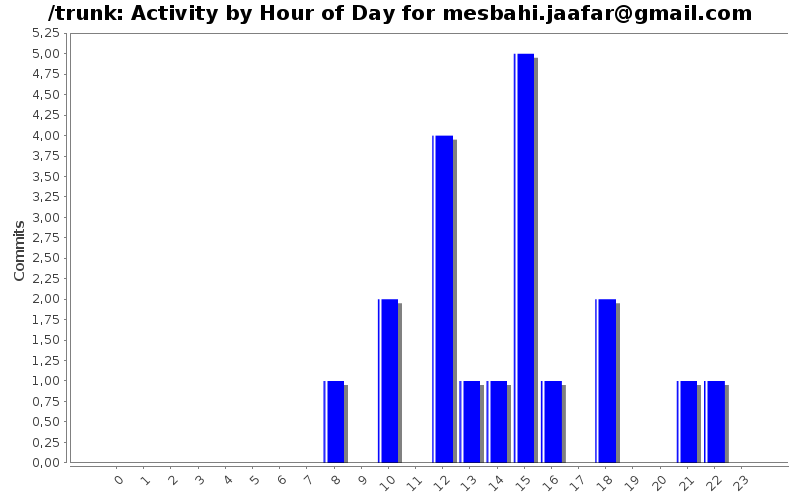
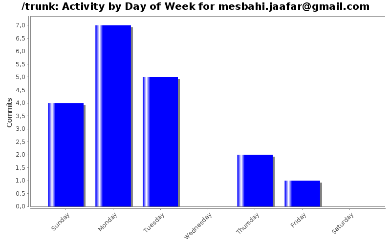
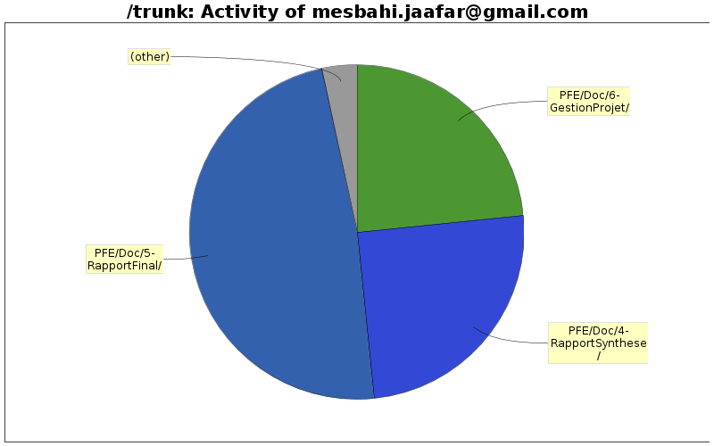

| Directory | Changes | Lines of Code | Lines per Change |
|---|---|---|---|
| Totals | 19 (100.0%) | 5554 (100.0%) | 292.3 |
| PFE/Doc/5-RapportFinal/ | 6 (31.6%) | 2681 (48.3%) | 446.8 |
| PFE/Doc/4-RapportSynthese/ | 1 (5.3%) | 1387 (25.0%) | 1387.0 |
| PFE/Doc/6-GestionProjet/ | 1 (5.3%) | 1300 (23.4%) | 1300.0 |
| PFE/CompteRendu/ | 1 (5.3%) | 186 (3.3%) | 186.0 |
| PFE/Presentation/ | 7 (36.8%) | 0 (0.0%) | 0.0 |
| PFE/Doc/Images/ | 3 (15.8%) | 0 (0.0%) | 0.0 |

+ Présentation partie Gesrion Coûts et Projet
0 lines of code changed in 1 file:
-+ Gestion de projet et Gestion des coûts
0 lines of code changed in 1 file:
+ Duplication du modéle afin que chaqu'un bosse indépendament sur ça Bartie pour éviter d'avoir des conflits
0 lines of code changed in 5 files:
-+ Correc-+ Correction du chemin relatif et absolu
1300 lines of code changed in 1 file:
+ Ajout DiagrammeIDEEF0.png
-+ Intégration du diagramme dans la partie gestion de projet :)
45 lines of code changed in 2 files:
-+ Modification du Modéle IDEEF0
0 lines of code changed in 1 file:
-+ Ajout partie Pb et solution apporté
38 lines of code changed in 1 file:
+ Ajout de la répartition des charges dans la partie Gestion des coûts
1256 lines of code changed in 1 file:
+ Ajout figure Compte Rendu
0 lines of code changed in 1 file:
-+ Modification du Produit Back log
-+ Ajout des itérations
1038 lines of code changed in 1 file:
+- Modification du fichier AlgoMarcheur.lyx (rapport de synthése)
Abdou Nait Abdelkacem
1387 lines of code changed in 1 file:
-+ Ajout des Outils de travail
32 lines of code changed in 1 file:
-+ Partie Historique ST + quelque modif.
272 lines of code changed in 1 file:
+ Compte réunion avec Madame Frydman
186 lines of code changed in 1 file: